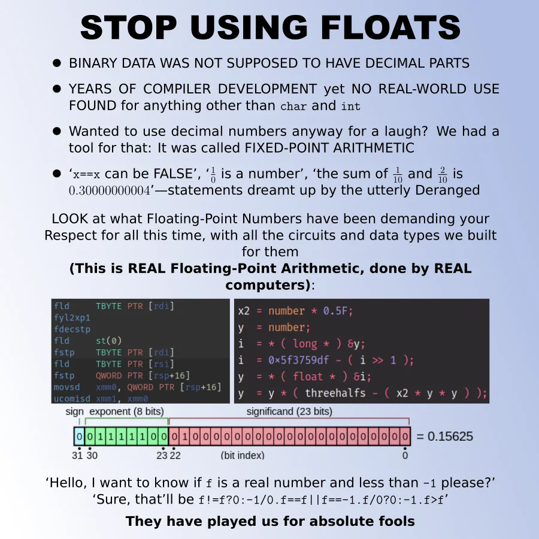

Every time floats are mentioned, I pull up this image. Why, well mainly because it's funny and it's true.
Computers do not actually know what decimals are. Similarly with signed numbers, we have to use a system to represent such values. However unlike signed integers there are many systems, it just so happens that this is the most common.
Now how does it work, well I mean we covered it in class you really should remember.
All i'm going to do in this page is just expand on what the sections do.
The exponent is just a 8-bit binary number. However with one caveat in the sense that the value contained is subtracted by 127.
Why? Well a positive exponent is a big number and a negative exponent is a small number. Doing that shifts our range from 0 to 255 to -127 to 128
Because this is binary too, the exponent is above a 2.
The mantissa is just a 23-bit binary number. The first time a number is not divisible by two. This is pretty much a consequence of using the highest(first) bit as a sign bit (this also causes -0 and +0 to be different but that's another situation). We make up for this by adding the value in the mantissa to 1, slightly increasing the range.
One thing to note about the mantissa is that it uses negative powers of 2.
Its pretty much the same as regular binary.
1010 = 1*2^3 + 0*2^2 + 1*2^1 + 0*2^0 = 12 1010 = 1*2^0 + 0*2^-1 + 1*2^-2 + 0*2^-3 = 1.25
The mantissa is starts on 2^-1 in account of that sign bit again.
The issue stems from those negative powers of two. Any number not divisible by two will break into a repeating decimal. The mantissa ends at the 23rd decimal point so naturally some things will be lost.